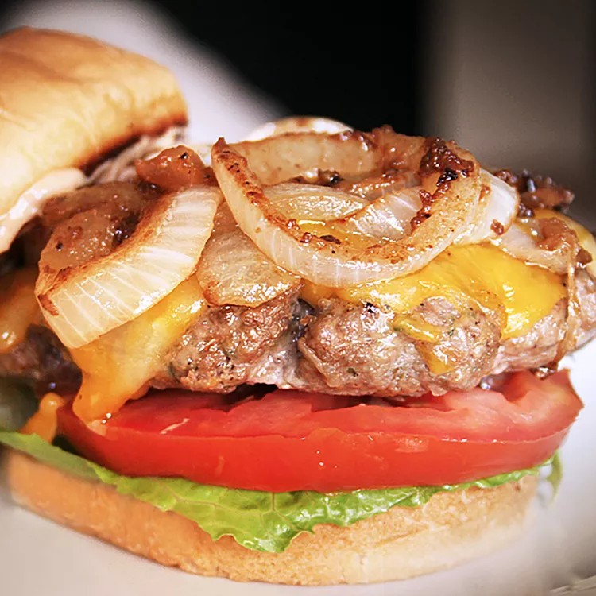

Hamburger Recipe

Best Hamburger Ever
Great juicy burger topped with grilled onions perfect for summertime! Served on a bun with your favorite condiments.
Prep Time: 10 minutes
Cook Time: 10 minutes
Total Time: 20 minutes
Servings: 4
Ingredients
- 1 ½ pounds lean ground beef
- ½ onion, finely chopped
- ½ cup shredded Colby Jack or Cheddar cheese
- 1 egg
- 1(1 ounce) envelope dry onion soup mix
- 1 clove garlic, minced
- 1 teaspoon soy sauce
- 1 teaspoon Worcestershire sauce
- 1 teaspoon dried parsley
- 1 teaspoon dried basil
- 1 teaspoon dried oregano
- ½ teaspoon crushed dried rosemary
- salt and pepper to taste
Instructions
- Preheat an outdoor grill for high heat and lightly oil the grate.
- Meanwhile, combine ground beef, onion, cheese, egg, onion soup mix, minced garlic, garlic powder, soy sauce, Worcestershire sauce, parsley, basil, oregano, rosemary, salt, and pepper in a large bowl. Use your hands to form the mixture into 4 patties.
- Cook patties on the preheated grill until no longer pink in the center and the juices run clear, about 4 to 5 minutes per side. An instant-read thermometer inserted into the center should read at least 165 degrees F (74 degrees C).
- Add whatever condiments you want to include to your burger